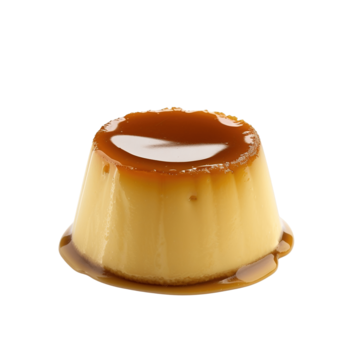

Receta para un flan casero con caramelo y dulce de leche

Ingrendientes
8 huevos
350 gr. azúcar
1 litro leche
1 cucharada esencia de vainilla
Paso a paso
Poner el molde donde vas a hacer el flan a fuego lento con el azúcar y dejar hasta que se disuelva
completamente el azúcar y tenga un color marrón claro. Retirar del fuego y dejar que se enfríe.
Poner a hervir la leche con el azúcar.
En un bols batir los huevos y agregar la leche y la esencia de vainilla.
Colocar en el molde acaramelado y llevar al horno a baño María por 25 o 30 min.
Preparación de otros Ingrendientes
Para el caramelo
Coloca una taza de azúcar en una sartén o cacerola a fuego medio y deja que se derrita sin revolver,
solo moviendo la sartén ocasionalmente para distribuir el calor de manera uniforme; cuando el azúcar
tome un color ámbar dorado, retira del fuego y viértelo rápidamente en el molde del flan, inclinándolo
para cubrir el fondo antes de que el caramelo se
Para el dulce de leche
Coloca un litro de leche, 300 g de azúcar y una cucharadita de bicarbonato de sodio en una cacerola a
fuego medio-bajo, revolviendo constantemente con una cuchara de madera hasta que tome un color marrón
dorado y una consistencia espesa, luego retira del fuego y deja enfriar antes de usar.